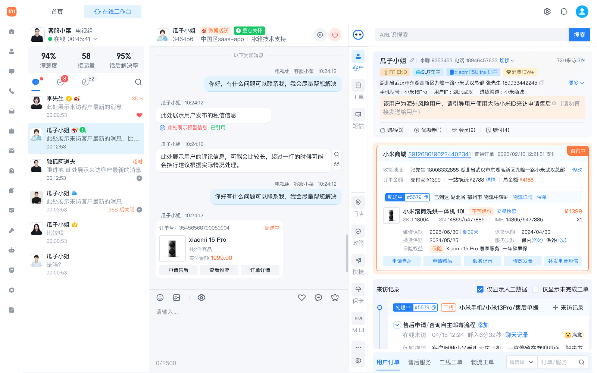
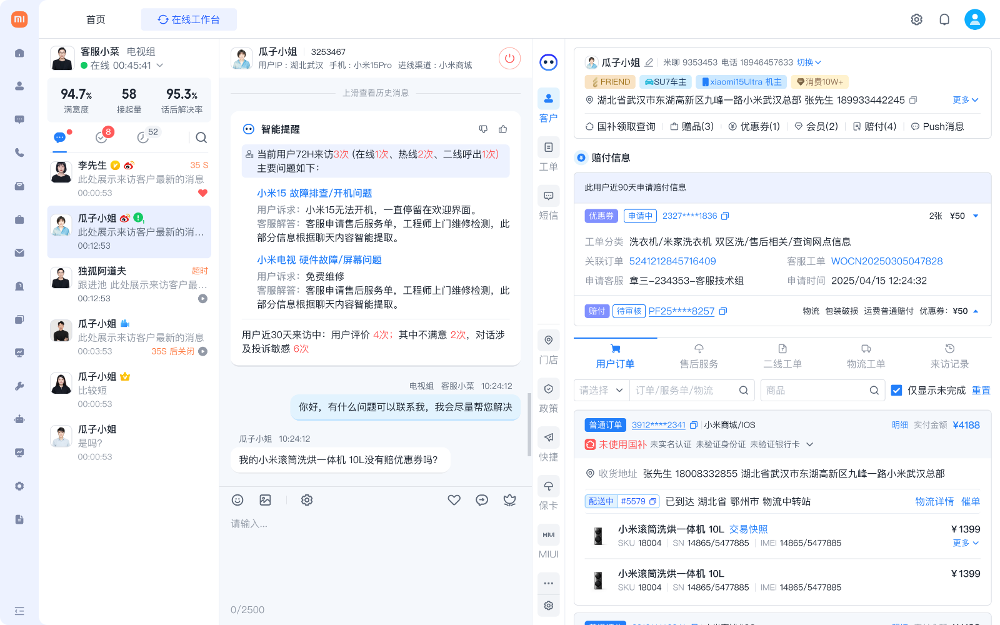
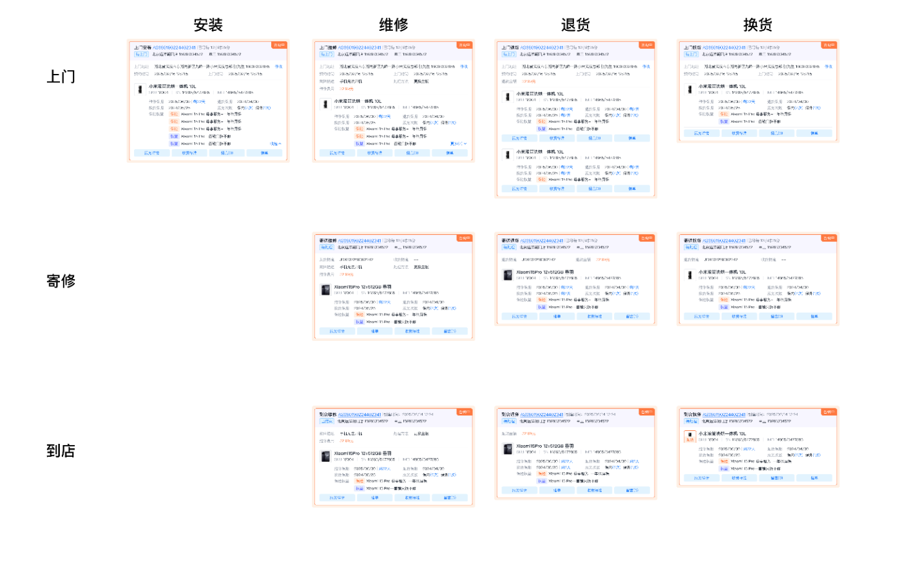
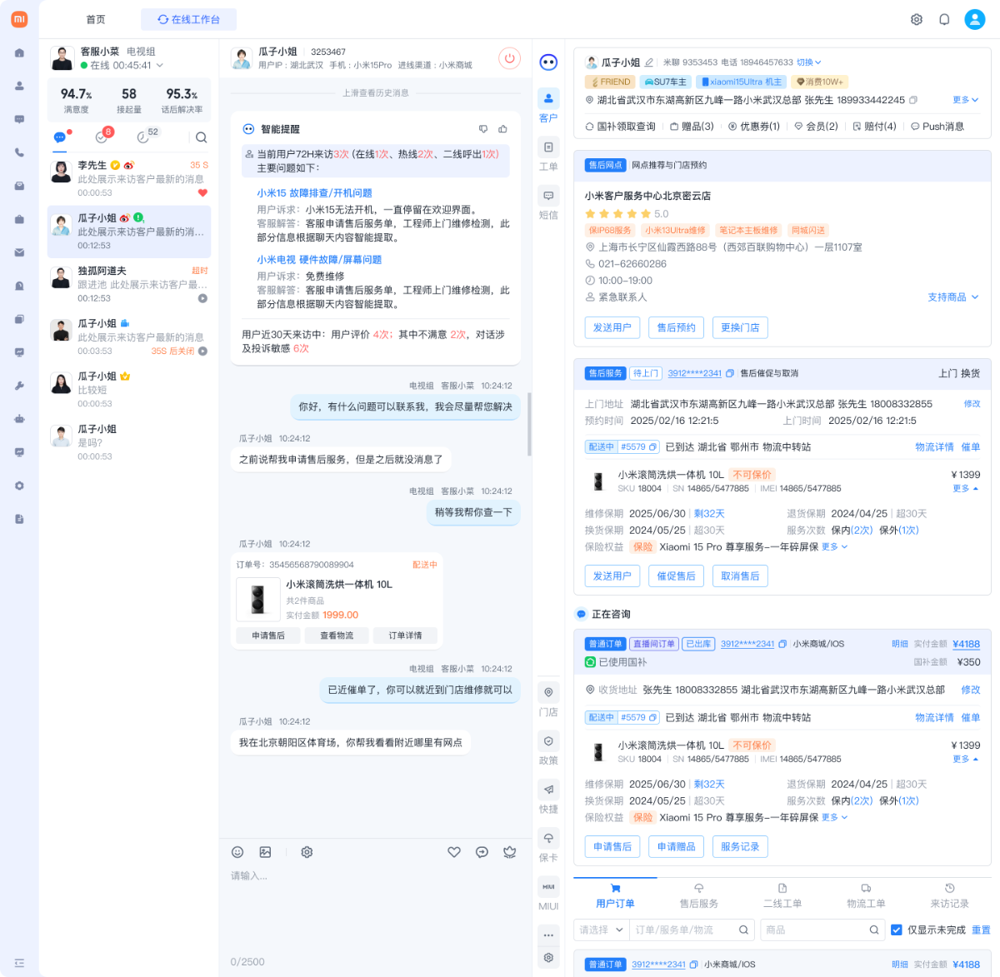
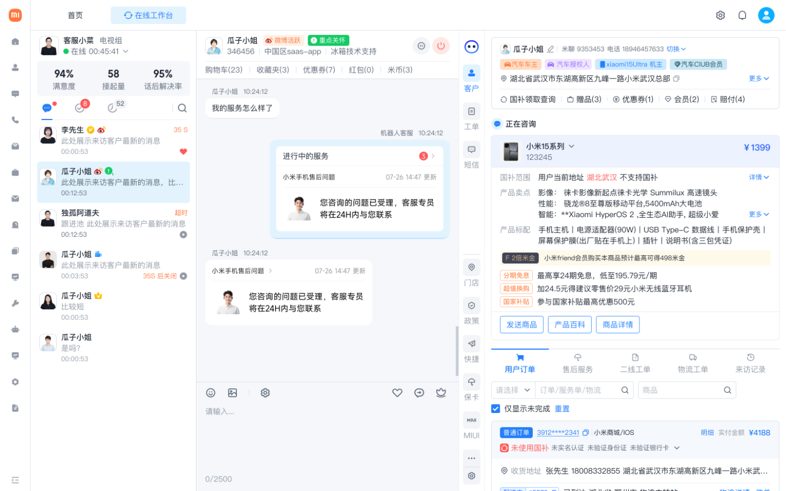

以 信息前置 + 意图识别 + 卡片化交互 为核心策略， 重构客服坐席的工作台体验。将分散在 4+ 系统的用户数据、订单、售后记录聚合为 一屏可读的信息视图，同时引入 AI 能力实现意图识别与方案自动推荐。
在大型电商平台的售后场景中，客服坐席面对的不仅是用户的问题， 还有分散在多个系统中的碎片化信息。用户等待时间长、操作路径深、 风险判断缺依据——成为制约服务效率与满意度的三大核心矛盾。
购买产品后遇到安装、故障、退换问题，期望快速拿到清晰的解决方案。
需要在有限响应时间内准确判断用户意图并给出最优售后方案。
追求更低服务成本 + 更高满意度，同时需要防范恶意索赔风险。
先定性再定量，先观察再访谈。跟坐发现现象， 日志验证规模，访谈捕捉差异——最终锁定真正的体验瓶颈。
嵌入真实客服工位，记录完整操作链路和系统切换行为
抽样分析对话轮次、意图识别准确度、服务路径分布
覆盖新手 / 熟练 / 资深三类客服，提炼差异化痛点
跟坐的五天让我们看见一个事实——客服的认知资源被"找信息"耗尽，
而不是用于"解决问题"。
用户画像、订单详情、服务记录、赔付历史散落在 CRM、OMS、售后系统 4+ 个平台。日志显示：客服每处理一个工单平均切换 6.3 次系统，78% 的时间在"找信息"，而非"解决问题"。
用户描述通常模糊（如"手机有问题"），客服平均需要 3.7 轮追问才能锁定服务类型与服务方式。新手客服甚至需要 5+ 轮——对话轮次越多，用户流失风险越大。
将用户全景数据整合到工作台右侧面板，以卡片化方式结构化展示，让客服"一眼看清"用户背景与当前诉求。
引入 NLP 意图识别，从对话中自动提取服务需求，结合用户上下文主动推荐最优解决方案，把追问前置给机器。
围绕"让客服在正确的时间看到正确的信息"这一核心原则， 设计了三层递进策略：信息层做聚合降噪，智能层做意图识别与推荐，交互层用卡片实现一键操作。
AI 识别到意图后弹出浮窗推荐方案。
问题：打断客服正在进行的对话操作，跟坐观察中被抱怨最多。任务完成率 -24%。
在聊天气泡之间插入推荐卡片。
V1 原型测试发现：卡片被大量消息淹没，客服回滚查找率 42%。
AI 推荐内容固定在右侧面板，不侵入对话区。
客服在需要时自然扫视，操作路径最短，认知干扰最低。任务完成率 +18%。
自动加载画像与风险标签
右侧面板展示订单 / 设备 / 记录
AI 分析对话，锁定服务类型
推送售后卡片 / 推荐门店
客服在卡片上直接发起服务
服务状态实时推送至工作台
每个模块都针对一个具体的业务痛点，从用户识别 · 风险判断 · 方案推荐 · 门店匹配到服务跟进， 形成完整的售后服务体验闭环。以下展示每个模块的设计细节与界面实现。
当用户进入会话时，系统自动识别用户属性（国内/国外、VIP 等级、历史行为特征）， 以醒目标签前置到聊天窗口顶部和右侧面板中。

右侧面板自动加载用户近 90 天的赔付历史，包括赔付次数、累计金额、原因分布。 高频赔付用户触发风险预警标签，辅助客服做出更审慎的判断。

信息密度最高的模块。根据产品类型、故障情况、用户位置和保修状态， 系统从 12 种组合中智能匹配最优方案，以结构化卡片展示。
| 安装 Install | 维修 Repair | 退货 Return | 换货 Exchange | |
|---|---|---|---|---|
| 上门 On-site | 工程师上门安装调试 | 上门检修，适用于大件 | 上门取件退货 | 上门取旧换新 |
| 寄修 Mail-in | N / A | 寄出至维修中心 | 寄回并自动退款 | 寄出旧件发新件 |
| 到店 In-store | N / A | 到店当场诊断维修 | 到店退货当场退款 | 到店取件换新 |

售后卡片矩阵全景：3 种服务方式 × 4 种服务类型 = 12 种方案的结构化卡片设计，每张卡片包含完整服务信息与一键操作入口。
当用户在对话中表达到店意图（如"附近有维修点吗""我想去线下看看"）， AI 实时捕捉意图信号，结合收货地址自动匹配附近门店， 右侧面板推送门店推荐卡片。

当服务进度发生变更（如工程师已派单、维修已完成、用户已确认收货）， 系统自动将状态变更卡片推送到对应客服的工作台。卡片上附带快捷操作按钮。

项目上线后持续跟踪核心指标，在效率、质量、成本三个维度均取得显著改善。 下面是四个关键指标的 before → after 对比。
一个项目的价值，不只在于成功的方案，也在于被淘汰的路径、被调优的参数、 以及仍然悬而未决的课题。
V1 方案曾尝试将 AI 推荐卡片嵌入聊天对话流中（方案 B）。灰度测试发现消息量大时卡片被快速淹没，客服回滚查找率 42%。这迫使我们转向右侧面板常驻方案——虽然牺牲了"即见即用"的直觉性，但解决了信息持久性问题。
初期设为 60% 时覆盖率高但误判多，客服反而需要额外纠错；最终提升到 82%，覆盖率降至 71%，但客服采纳率从 34% 跃升至 78%。好的 AI 体验不是"什么都推"，而是"推了就对"。
当前方案对"多意图并发"场景（用户同时咨询维修 + 退货）的支持仍不够好——右侧面板只能展示一个主推荐。下一步计划引入意图优先级排序和对话情绪识别，当检测到用户情绪负面时调整推荐策略。
不是通用方法论，而是在这个项目中真正起作用的做法—— 每一步都由前一步的数据推动。
5 天嵌入真实工位，发现 78% 时间在"找信息"
500+ 会话分析，锁定 6.3 次系统切换的瓶颈
3 种 AI 介入模式对比测试，数据决定取舍
V1 对话内嵌方案失败，迭代至常驻面板
AI 置信度从 60% 调至 82%，采纳率 34% → 78%
项目之外能被复用和延展的部分——包括解决思路、工作方法、组件体系和可观测指标。
将 4+ 系统的信息聚合到一个工作台，消灭客服"找信息"的时间黑洞，验证了"一屏可读"在高密度场景中的可行性。
AI 意图识别将平均意图确认从 3.7 轮降至 1.2 轮，形成"识别 - 推荐 - 确认"的人机协作范式。
风险前置机制帮助企业减少恶意索赔损失，同时保障正常用户的服务效率与体验。
卡片化交互设计形成可复用的组件体系，为后续业务（客诉、退款、工单）扩展奠定基础。